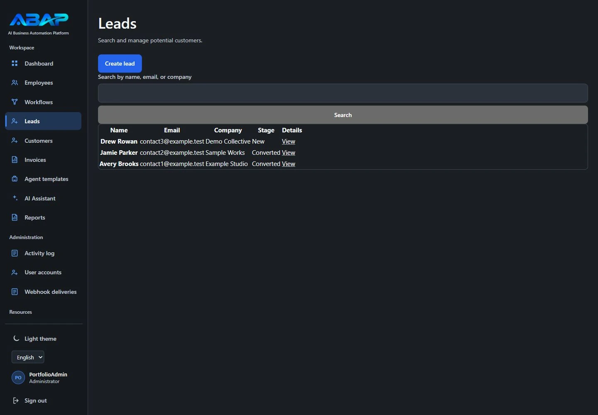
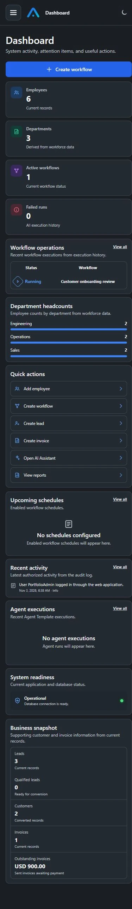

01
Business records
Core operational records and protected documents in one system.
- Employee management
- CRM leads and customers
- Invoices and protected PDF documents
AI Business Automation Platform
Manage employees, CRM leads and customers, invoices, and workflow execution history in a role-controlled application. The completed v1.0.0 portfolio release includes English/Japanese localization and a live, synthetic-only Advanced AI Assistant.

The problem
Small-business workflows often depend on disconnected tools, repetitive manual work, and automation that is difficult to monitor, secure, or recover after failure.
One Docker-based system brings records, automation, integrations, AI services, monitoring, backups, and recovery procedures together—so practical workflows can be built and operated with their supporting controls in view.
Platform capabilities
ABAP brings business data, workflow execution, integrations, AI, and operational safeguards into one platform.
Core operational records and protected documents in one system.
Production-enabled scheduling and background processing, with private n8n automation support.
HMAC-signed n8n dispatch and callbacks passed a controlled synthetic demonstration through authenticated public HTTPS pages. Shared production integrations remain disabled. The Advanced AI Assistant is live; the public knowledge chatbot below is separate.
PostgreSQL persistence, health/readiness monitoring, automated encrypted backups and verified isolated recovery.
Live authenticated demo
Explore the deployed assistant with synthetic business examples, your choice of free AI models, and clear confirmation steps.
Manually choose from the configured free cloud models. Availability and shared provider quotas apply; there is no paid fallback.
Choose English or 日本語 for assistant responses, independently of the interface language.
Review history saved to your own account. Each question is independent; previous conversations are not sent to the model.
Review and explicitly confirm supported synthetic demo interactions. Demo changes affect isolated fictional records only.
The current AI Assistant supports selectable AI models and synthetic business demonstrations, including confirmation-protected fictional demo interactions. Free-form conversation, live business-record access, and AI-initiated business actions are not enabled.
Login with an authorized ABAP account is required.
Currently uses synthetic demo data only.
Security & recovery
HTTPS, role-based access, server-side secrets, signed integrations, monitoring and recovery procedures support the completed portfolio release.
Secrets are kept separate from the codebase.
External webhook integrations use HMAC signatures.
Deployment follows a least-privilege principle.
Scheduled PostgreSQL and n8n backups use encrypted private storage. The corrected scheduled n8n backup completed successfully on November 5, 2026.
Isolated PostgreSQL restoration and recovered-application startup passed health/readiness checks. Separate n8n recovery drills verified SQLite integrity and credential decryption. This is recovery evidence, not a claim of zero data-loss risk.
The public chatbot uses reviewed public knowledge. The authenticated Advanced AI Assistant uses only synthetic/public demonstrations; cloud models do not depend on an owner-operated local AI server.
Technology
The platform uses established application, automation, data and cloud AI technologies.
Inside the application
Captured from the current application in an isolated local environment on November 3, 2026. Every record is synthetic. Open any image to inspect it at full size.

Fictional contacts with new and converted lead stages.
Synthetic demonstration data · View full image ↗
Calculated line items, a sent invoice, and a protected PDF download. All amounts are synthetic.
Synthetic demonstration data · View full image ↗
An active manual workflow with a started-only execution. It remains Running; no completed automation or external dispatch is shown.
Synthetic demonstration data · View full image ↗
Localized interface labels with the same synthetic records. Business data and some date formatting remain English.
Synthetic demonstration data · View full image ↗
The actual responsive dashboard at a 390 × 844 viewport. Full-page capture; the workflow table scrolls horizontally.
Synthetic demonstration data · View full image ↗These screenshots demonstrate the recorded local state, not production business data or commercial results. These November 3 captures predate final release acceptance; the workflow image shows its earlier manual run, not the later verified signed n8n demonstration.
Public knowledge assistant
The assistant searches only ABAP's reviewed public knowledge base. It does not access private application data, customer records, or internal documents.
Project status
All 9 development milestones are complete for the defined v1.0 release scope. ABAP v1.0.0 is a deployed business automation platform featuring CRM, invoicing, employee management, workflow automation, signed n8n integration, and a multi-model AI Assistant. The release includes English/Japanese localization, secure HTTPS deployment, production monitoring, automated backups, and verified isolated recovery.
View v1.0.0 release ↗ · Completed roadmap ↗ · Acceptance evidence ↗
Production application
Open the production application. Authentication is required to access protected application features.
Launch Application